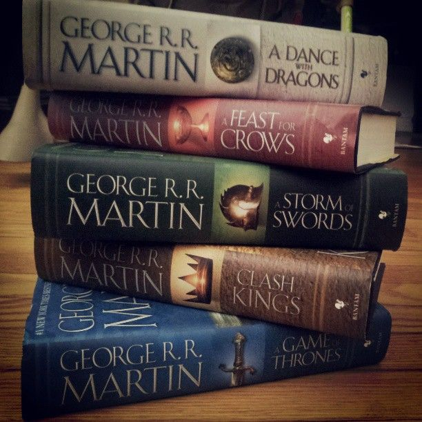

Noteable Works
We will now look at some noteable works in the fantasy genre, The Lord of the Rings and A Song of Ice and Fire.
The Lord of the Rings
The Lord of the Rings is a series of books written by J.R.R Tolkein. The story is set in a place called Middle-earth with creatures like dragons and hobbits, it set the benchmark for modern fantasy today. Often remarked as one of the modern benchmarks for fantasy, Tolkein revolutionalised the genre with his detailed writing and engaging stories. An exerpt from the first book in this series, The Fellowship of the Ring can be seen below:
‘I should like to save the Shire, if I could – though there have been times when I thought the inhabitants too stupid and dull for words, and have felt that an earthquake or an invasion of dragons might be good for them. But I don’t feel like that now. I feel that as long as the Shire lies behind, safe and comfortable, I shall find wandering more bearable: I shall know that somewhere there is a firm foothold, even if my feet cannot stand there again.’

The above picture shows the Lord of The Rings books.
These books were so popular that they were adapted into feature-length movies, the trailer for the first movie can be seen below:
The movie was very successful, earning over USD$898.2 million in the box office. This massively popularized the fantasy genre with mainstream audiences.
A Song of Ice and Fire
A Song of Ice and Fire, more commonly known by the name of its first book, Game of Thrones, is a series of books created by George R.R. Martin in the land of Westeros, being released almost 50 years after the first Lord of the Rings book. The book was written when modern fantasy was very established. Yet, some would say it revolutionalised the genre, with Martin being called the American Tolkein. A Song of Ice and Fire introduced a lot more adult themes in the genre and includes large amounts of violence and sexual content. An exerpt from the first book of the series: Game of Thrones can be seen below.
'Until tonight. Something was different tonight. There was an edge to this darkness that made his hackles rise. Nine days they had been riding, north and northwest and then north again, farther and farther from the Wall, hard on the track of a band of Wildling raiders. Each day had been worse than the day that had come before it. Today was the worst of all. A cold wind was blowing out of the north, and it made the trees rustle like living things. All day, Will had felt as though something were watching him, something cold and implacable that loved him not. Gared had felt it too. Will wanted nothing so much as to ride hellbent for the safety of the Wall, but that was not a feeling to share with your commander.'
The above picture shows the "A Song of Ice and Fire" books.
The books became popular with readers, and it launched a TV show bearing the name of the first book, Game of Thrones. This show wildly exploded the popularity of the series, even more so than the Lord of the Rings and it became a global phenomenon. The trailer for the first season of the show can be seen below:
The show was very successful, getting renewed for multiple seasons, however, the final season of the show remains controversial as fans believe the ending to the show was too rushed.
Comparisons Between the Two Works
Being popular fantasy series, The Lord of The Rings and A Song of Ice and Fire is constantly compared with one another. Furious debates on which series is the definitive representation of the fantasy genre can be seen in message boards online. Which series do you prefer?